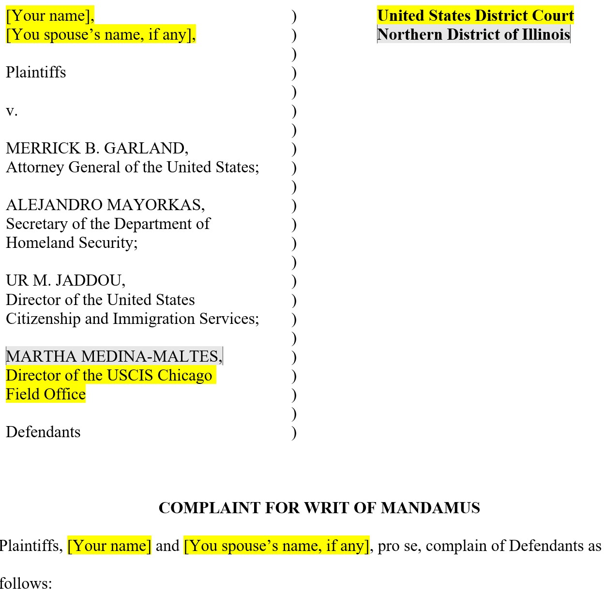
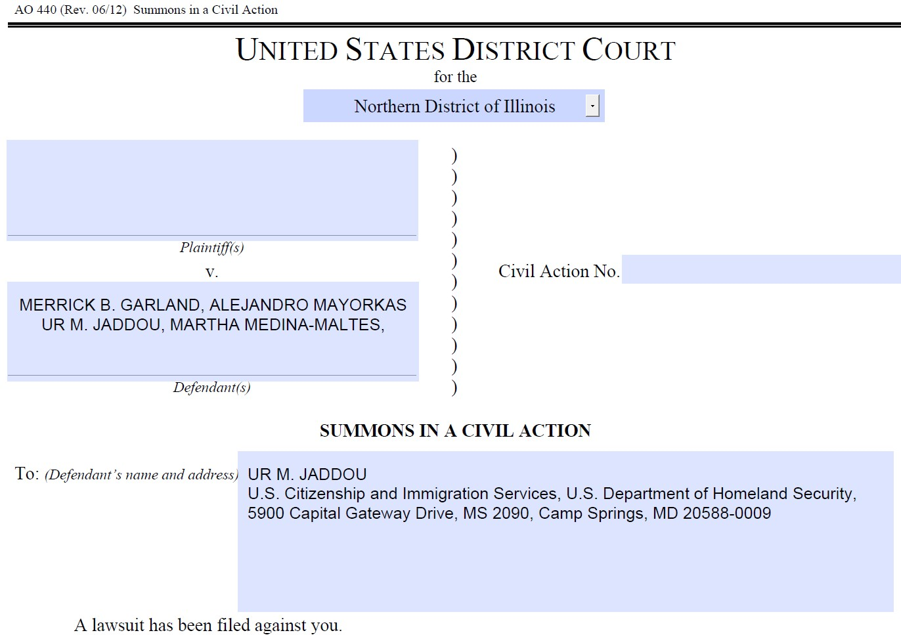
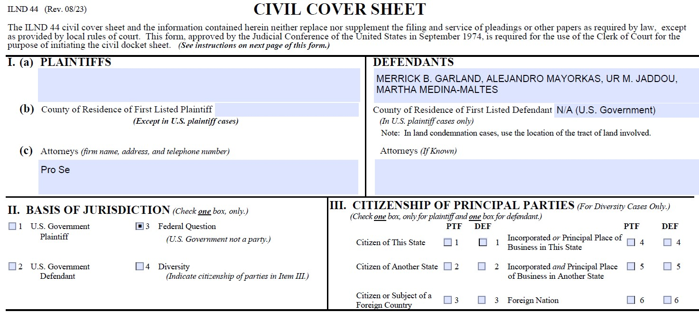
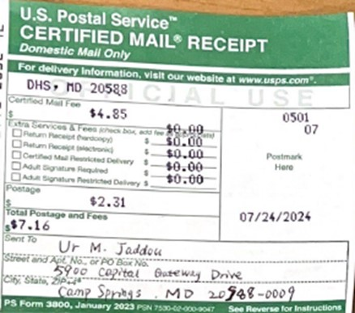

Congratulations, because when you're planning to file a federal writ of mandamus (WOM) for your immigration applications, you're not far from getting your green card, EAD, or citizenship.
I've tried and found that there's no detailed DIY tutorial for filing a federal WOM immigration cases anywhere online. So I spent two weeks researching and consulting various sources, and finally succeeded in getting the federal court to accept my complaint of I-485 application. This tutorial is carefully prepared for friends whose I-485 (or other forms, I-765, I-140, I-130, I-131, N-400 etc.) processing time has been too long (e.g. over 1 year) and who want to DIY (technically called Pro Se) a court lawsuit (it's actually quite simple if you don't take detours), if you don't want to spend a few thousand dollars to hire a lawyer.
Understanding Writ of Mandamus
First, I'd like to explain some concepts related to WOM and the general process. In our case, WOM refers to a court order compelling USCIS to fulfill its duty. Simply put, you're suing the immigration bureau in federal court. According to the U.S. Congressional Act 8 U.S.C. § 1571(b), USCIS must make a decision within 180 days after receiving an immigration application, like an I-485 (after it becomes current). Otherwise, we can file this mandamus. USCIS has 60 days to respond after receiving the WOM, or they will face penalties.
8 U.S. Code § 1571
(b)Policy It is the sense of Congress that the processing of an immigration benefit application should be completed not later than 180 days after the initial filing of the application, except that a petition for a nonimmigrant visa under section 1184(c) of this title should be processed not later than 30 days after the filing of the petition.Important Prerequisites:
There's a prerequisite here: in principle, you can sue after waiting for more than 180 days, but lawyers generally recommend filing a WOM after waiting for over a year. It depends on your situation; if necessary, you can try after seven or eight months. Another prerequisite is that you've tried other methods, such as sending queries to USCIS or contacting congressmen, but these were ineffective.
Note that the success of a WOM only depends on whether the court accepts the case because the function of a WOM is just to force USCIS to make a decision within 60 days, not to guarantee approval of your green card. However, for cases without major issues, the result is usually approval, and it's quick (10 days to 2 months).
General Steps for WOM
- Preparing documents
- Personally going to court to file the case
- Mailing summons to defendants
- Uploading mailing evidence to the court
After receiving the documents, the court will immediately hold a meeting to review them and then notify you whether the case is accepted. If accepted, they'll ask you to pay a fee (about $400). After leaving the court, you can scan all documents for record-keeping, then go to the post office to send a copy of the complaint and the original summons (with the court's seal and signature) to each defendant by certified mail. Afterward, send the green cards and receipts from the post office to the court by mail or upload them online. Then, you wait for the moment when the USCIS director receives the summons and capitulates.
Detailed Process
1. Preparing Documents
You can download document forms from your local Federal District Court's official website, including the civil complaint form, summons, civil cover sheet, and pro se appearance form. Additionally, you can read their related instruction documents (usually very long, dozens of pages).
a. Complaint Form
The complaint is the most crucial part of the entire case. To ensure the court will accept your case, your complaint needs to clearly articulate relevant legal provisions, combine them with your personal situation, and logically prove with evidence that USCIS has a duty to make a decision for you immediately, that you have the right to this benefit, and that you've tried other channels but couldn't resolve the issue. You need to attach relevant evidence in the complaint. Note that there must be no false statements, or you'll face court penalties and it will affect the case result and your personal credit. Be very careful.
A complete complaint usually includes the following parts: title, introduction, jurisdiction and venue, parties, statutory background, facts, claims for relief, prayer for relief, signature, and exhibits.
Title
As shown below, the top left of the title page should list the names and positions of the plaintiff and defendants. For cases where 485 results are long overdue, you should sue the following officials as of 2024:
- Mr. Merrick B. Garland, Attorney General of the United States Department of Justice
- Mr. Alejandro Mayorkas, Secretary of the Department of Homeland Security (USCIS's superior department)
- Ms. Ur M. Jaddou, Director of U.S. Citizenship and Immigration Services (USCIS)
- The director of your 485 case processing center (e.g., Chicago Field Office)
Additionally, on the right side, you should write the name of the federal district court in your area.
Introduction
The introduction should briefly explain the nature and purpose of the lawsuit, outlining key issues and the help sought. Note that from here on, each sentence should start with a numbered heading. For example:
Then briefly introduce how long you've waited, what channels you've sought, and what impact it has had on you.
Jurisdiction and Venue
This part needs to explain why the court has jurisdiction over this case and why it's appropriate to file the lawsuit in this specific location. For example:
Parties
You need to list and describe all plaintiffs and defendants. For each defendant, explain their relationship to the case. For example:
8. Defendant Merrick Garland is the Attorney General of the United States and is sued in official capacity.
Statutory Background
Explain the laws relevant to the case and cite relevant regulations and provisions. For example:
Statement of Facts
List important facts of the case in chronological order, including dates, actions, and relevant documents. If necessary, attach evidence at the end of the document. For example:
Claims for Relief
List specific legal claims against each defendant, explaining why the defendant's actions are illegal or improper. For example:
31. Plaintiffs reallege and incorporate by reference the foregoing paragraphs.
32. The Administrative Procedure Act (APA) requires administrative agencies to conclude matters presented to them "within a reasonable time." 5 U.S.C. § 555(b).
Prayer for Relief
List the specific actions you want the court to take. Include compelling the defendants to immediately adjudicate the plaintiff's I-485 application, compensate the plaintiff for costs in this case, and grant other relief that this court deems just and appropriate (such as lost wages, emotional distress compensation).
A. Assume jurisdiction over this matter;
B. Compel Defendants to immediately adjudicate Plaintiffs' I-485 applications;
C. Award Plaintiffs their costs in this action; and
D. Grant such other and further relief as this Court deems just and proper.
Signature
Write the names of all plaintiffs (e.g., XXX XXX, Pro Se), address, phone number, email. You need to handwrite your signature next to it for it to be effective.
Exhibits
Insert a blank page, write EXHIBITS, then start attaching exhibits in the order they appear in the original text from the next page.
b. Summons
The defendants' addresses on the summons are crucial. If filled out incorrectly and the defendant doesn't receive notice, the court can't help. I consulted multiple sources and verified through multiple channels before finding these defendants' office addresses. Here are the four defendants and their mailing addresses:
- UR M. JADDOU, U.S. Citizenship and Immigration Services, U.S. Department of Homeland Security, 5900 Capital Gateway Drive, MS 2090, Camp Springs, MD 20588-0009
- Alejandro Mayorkas, Office of the General Counsel, U.S. Department of Homeland Security, 2707 Martin Luther King Jr. Ave, SE, Washington, DC 20528-0485
- MERRICK B. GARLAND, U.S. Department of Justice, 950 Pennsylvania Avenue, NW, Washington, DC 20530-0001
- Martha Medina-Maltes, USCIS Chicago Field Office, 101 W. Ida B. Wells Drive, Chicago, IL 60605 (This needs to be replaced with the director and address of your 485 processing center)
You need to download the summons form from your local court's official website and prepare a separate summons for each defendant. You don't need to sign it; the court will sign and seal it. For example:
c. Civil Cover Sheet
Mainly fill in plaintiffs, defendants, and case classification. Basis of Jurisdiction should be Federal Question. Below is the cover sheet for the Chicago District Court. You need to download and fill out the corresponding form from your local federal court's official website. You don't need to sign it.
d. Pro Se Appearance Form
This form states that you are DIYing this federal writ of mandamus complaint without hiring a lawyer. Fill in your name, address, contact information. Then sign, it's simple.
These are the four required forms. You need one original and 2-4 copies of each document. Some courts may require additional documents. It's best to read their instructions or call or email them to clarify. If you find it too complicated or don't have time, you can contact me to help prepare all documents.
2. Going to Court to File the Case
Now that you've prepared all the documents, you can choose an auspicious day to go to court and file the case.
You can find the court's address on their official website. Upon arrival, you usually need to go through security first, put all your belongings in a tray, remove belts with metal, but usually don't need to take off your shoes. Then find the Clerk's Office, smile and say to the receptionist: "Excuse me, can you help me file a civil case?" Hand over your documents. Wait about 10 minutes, after they check your documents, they'll gather two or three people for a meeting to discuss for 10 minutes, then come back to tell you: Congratulations, we've decided to help you file the case. Then they'll give you a case number, randomly assign a judge, sign and seal the necessary documents, and ask you to pay the fee (about $400).
If you want to avoid paying, you can also fill out a form to apply for a waiver. They will process the case first, then decide whether to charge you (they might charge you, not charge you, or charge you partially). If you don't have enough copies of some documents, you can make copies there, but they charge for it, usually $0.5 per page.
3. Mailing Summons to Defendants
After filing the case, you need to serve your defendants, which means notifying them that you've sued them. Once they receive the summons, the 60-day countdown begins, within which USCIS must give you a result.
After leaving the court, you can make 5 copies of the complaint, then go to the post office to send each defendant a copy of the complaint and the original summons (the one signed and sealed by the court). Note that in addition to the defendants, you also need to send a copy of the complaint and one copy each of the four summons (court-signed) to your local Attorney General. You can look up the address of your local Attorney General's office online. Some people didn't send to the local Attorney General and delayed the 60-day countdown.
Remember to use certified mail, which costs about $10 per package, has a tracking number, arrives in about 2 days, requires the recipient's signature, and has a high security level.
4. Uploading Mailing Evidence to the Court
The post office will give you 5 green cards (not that green card, don't get excited) and receipts. At this time, you need to fill out the second page of the summons document (proof of service, proving that you've mailed the summons), then mail it to the court along with the post office cards and receipts. You can also ask if you can upload them online.
At this point, you just need to wait another month or two for the result, and you can relax. The frustration accumulated over 1-3 years towards the immigration bureau can finally be vented with a court summons slapped on the USCIS director's face. Good luck! May we no longer be troubled by status issues.
After being reminded by friends, I realized that I could indeed expand my business, not wasting the time and effort I spent preparing my lawsuit. If you have any questions about DIY federal writ of mandamus for immigration cases or want to seek help, you can contact me.
5. Assistance and Pricing
To help fellow applicants navigate this process, our WOM Assistant team offers two levels of assistance:
1. Complaint Template
For $49, you can receive my comprehensive complaint template. This template is based on successful cases and includes all the necessary sections properly formatted. You can easily customize it with your specific details.
2. Full Document Preparation
For a more hands-off approach, we offer a full document preparation service for $490. This includes:
- Customizing the complaint based on your specific situation
- Preparing all required documents according to your local court's instructions
- Ensuring all forms are properly filled out and formatted
- Providing guidance on the filing process
To use this service, you'll need to provide me with information about your case, including history status and the actions you have taken. We will then prepare all the necessary documents tailored to your situation.
Remember, while we can assist with document preparation for a successful filing of WOM, we are not a lawyer and cannot represent you to file the case. We encourage you to do your research on WOM and make your own decision.
If you're interested in either of these options or have any questions, please contact us at assistantwom@gmail.com.